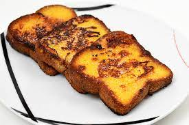

Recette de Pain Perdu
Le pain perdu est un délicieux petit-déjeuner ou dessert. Voici comment préparer du pain perdu moelleux et savoureux.

Ingrédients
- 4 tranches de pain (pain de campagne ou brioche)
- 2 œufs
- 1/2 tasse de lait
- 1 cuillère à soupe de sucre
- 1 cuillère à café d'extrait de vanille
- Beurre pour la cuisson
- Sirop d'érable ou sucre en poudre (facultatif)
Instructions
- Dans un bol, battez les œufs, le lait, le sucre et l'extrait de vanille.
- Trempez chaque tranche de pain dans le mélange d'œufs, en les retournant pour bien les imbiber.
- Dans une poêle, faites fondre une petite quantité de beurre à feu moyen.
- Ajoutez les tranches de pain imbibées dans la poêle chaude et faites-les cuire jusqu'à ce qu'elles soient dorées et croustillantes des deux côtés, environ 2-3 minutes de chaque côté.
- Retirez les tranches de pain de la poêle et égouttez-les sur du papier absorbant pour éliminer l'excès de graisse.
- Optionnel : saupoudrez de sucre en poudre ou arrosez de sirop d'érable avant de servir.
C'est tout ! Profitez de votre délicieux pain perdu moelleux.
Bon appétit !